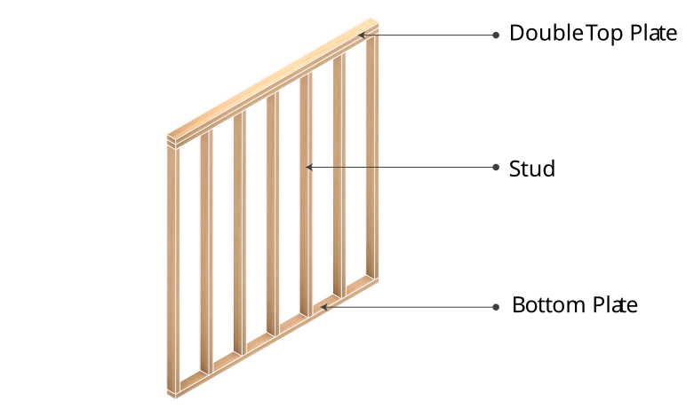
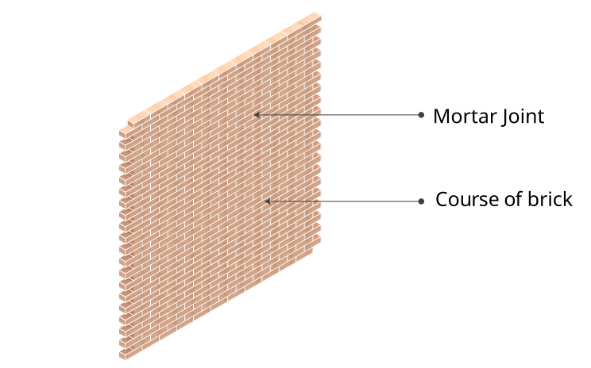
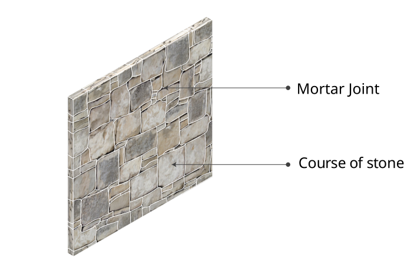
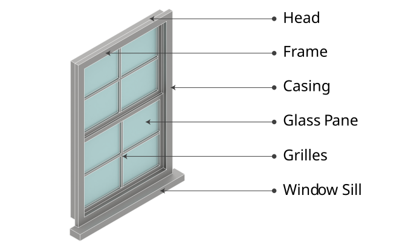
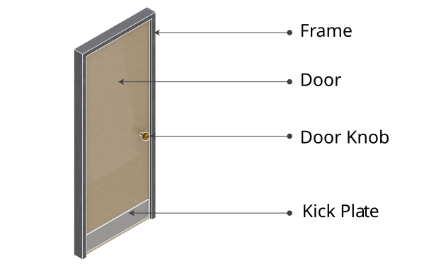
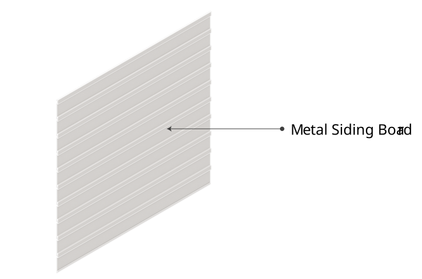
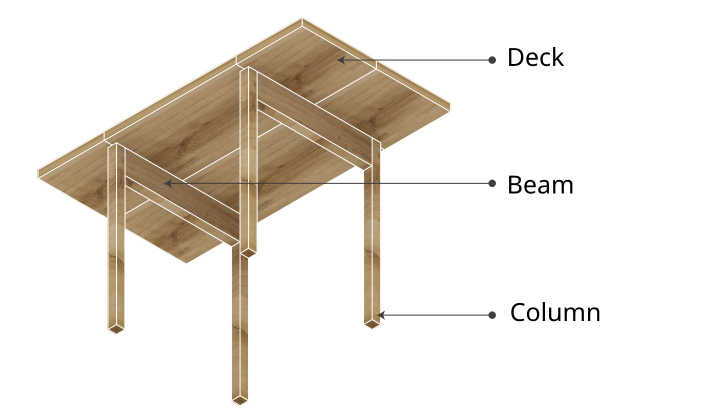
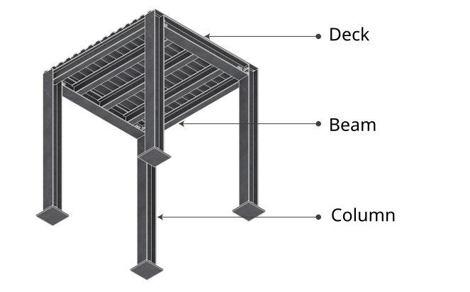

ORBIT
MATERIALS
MATERIALS
IDENTIFY REUSABLE MATERIALS IN
YOUR BUILDING FACADE
Upload a photo of your facade and our AI will detect material types, then give you tailored reuse and recertification recommendations.
How It Works:
The analyzer is trained on construction materials with reuse potential. Once detected, each material can link to material information, recertification guides, drop-off locations, and next-life suggestions.
Detected Components
Detected components will appear here after analysis.
Circularity Recommendations
Reuse guidance will appear here after analysis.
Material Information
Click a detected component above to jump to its material information.
This section gathers reuse-focused notes on ease of deconstruction and
the deconstruction process for each material group.

Dimensional Lumber
Ease of Deconstruction
Deconstruction of dimensional lumber is of medium difficulty.
Nailed connections must be pried apart, and can risk splitting
the wood during removal. Denailing is a labor-intensive activity,
and can be time consuming.
Deconstruction Process
Wood must be denailed either by a manual or pneumatic nail punch.
Ends of wood may need trimming if the wood has split. Lumber should
be dried and planed if the surface is damaged or to standardize
thickness. Any paint or chemicals should be planed or sanded off
before reuse.


Brick, Stone and Masonry Units
Ease of Deconstruction
Brick has a high effort for proper deconstruction. Bricks should
be removed by hand after mortar is softened, for example with
chipping hammers. It is easy to damage bricks if mortar is very
hard, which is common in post-1930s cement mortar. Older lime
mortar is softer, and bricks often come out intact. Once bricks
are removed they can be put on a pallet by hand. Stone blocks can
be pried out with equipment, though there is a risk of cracking
if not careful.
Deconstruction Process
Clean mortar traditionally with hammers and chisels. Bricks are
then sorted by quality, for example face bricks versus interior
bricks. No other repair is generally needed unless large chipping
occurred. Stone mortar is cleaned off and any embedded metal
removed. Stone may be reshaped, resized, washed, or chemically
cleaned where required.

Window & Frame
Ease of Deconstruction
Removal can be easy if the frame is screwed in. To remove, unscrew
and carefully pry the window out. Old wood windows can be removed
intact if weights and stops are removed. There is a high risk of
glass breakage if pried roughly or if there are hidden fasteners.
Insulated glass units can also be damaged during removal.
Deconstruction Process
Wood windows can be stripped, repaired, reglazed, weatherstripped,
and repainted. Steel windows may require rust removal and
refinishing, while aluminum windows can often be cleaned and have
worn gaskets replaced. Failed insulated glazing units generally
need replacement before reuse.

Door & Frame
Ease of Deconstruction
Wood doors are generally very easy to remove. Hinge pins can be
removed or hinges unscrewed. Metal frames can be more difficult
and may bend during removal. Wood frames can often be removed
intact once one side of the wall is opened.
Deconstruction Process
After removal, surfaces can be stripped, sanded, repainted or
stained. Frames may require repair or resizing and hardware can be
cleaned, repaired, re-keyed or replaced. Fire-rated doors may
require documentation before reuse in rated applications.

Building Envelope Panel
Ease of Deconstruction
Panelized systems can be moderately difficult to disassemble
depending on the type. Long metal siding panels often come off by
removing screws. Wood siding can be pried off but may crack.
Stucco and fiber cement generally have more limited reuse potential.
Deconstruction Process
Remove sealants and gaskets from cladding panels. Check metal
panels for corrosion. Wood siding should be denailed, stripped and
refinished. Stucco and fiber cement generally require careful
separation and waste handling rather than direct salvage.

Heavy Timber
Ease of Deconstruction
Large timber members often have a high ease of deconstruction
because many connections are bolted and can be unbolted with
appropriate tools. Heavy pieces require machinery for safe handling.
Deconstruction Process
Remove metal hardware, coatings and damaged material as required.
Members may need drying, surface preparation, pest treatment or
trimming. Some large members can be resawn for new applications.

Structural Steel
Ease of Deconstruction
Structural steel is of moderate difficulty to deconstruct. Bolted
connections can often be disassembled, while welded connections
require cutting. Long, heavy beams generally require crane handling.
Deconstruction Process
Steel surfaces may require cleaning, grinding or sandblasting.
Bent members can sometimes be straightened and connection plates
modified. After preparation, members can be repainted, primed or
galvanized for reuse.